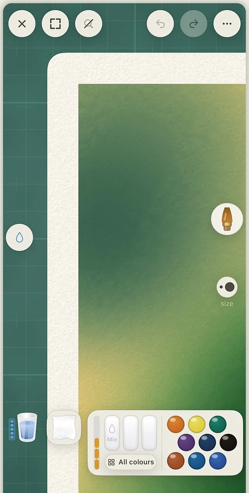
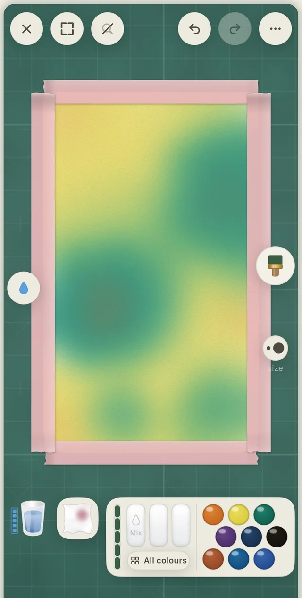
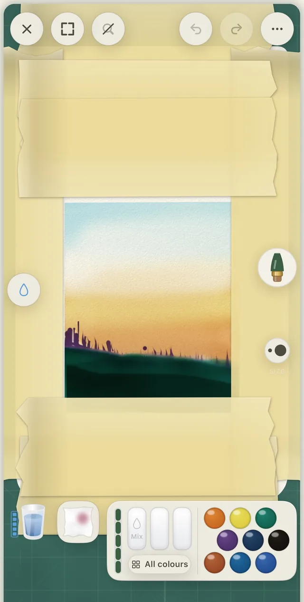
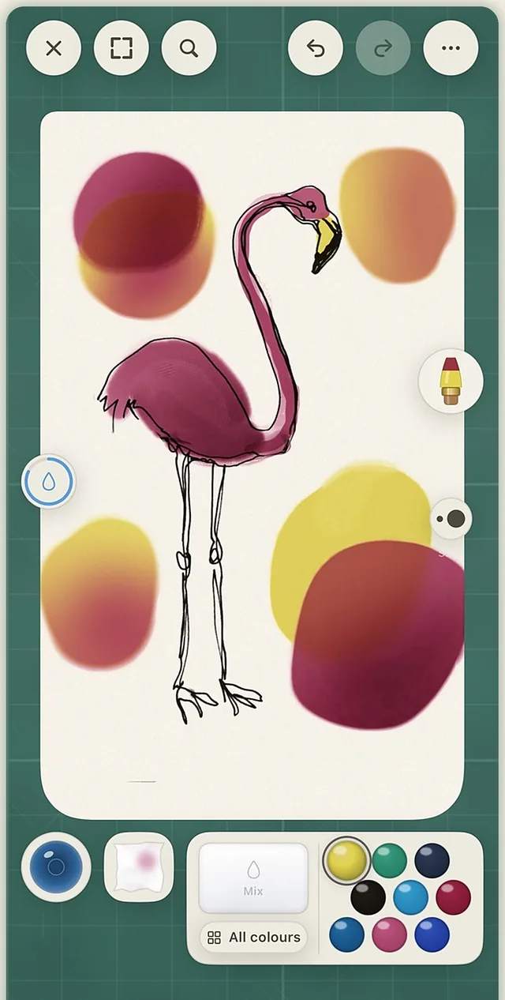
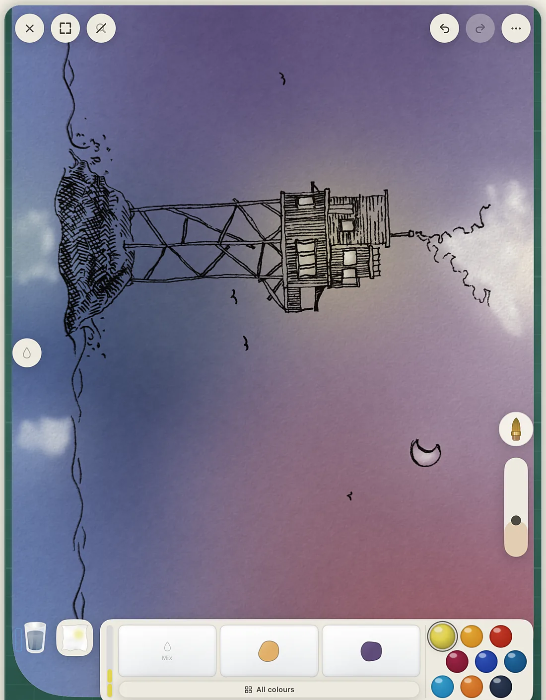
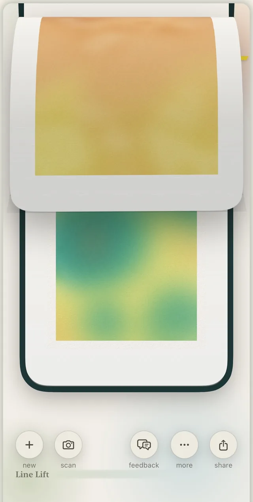
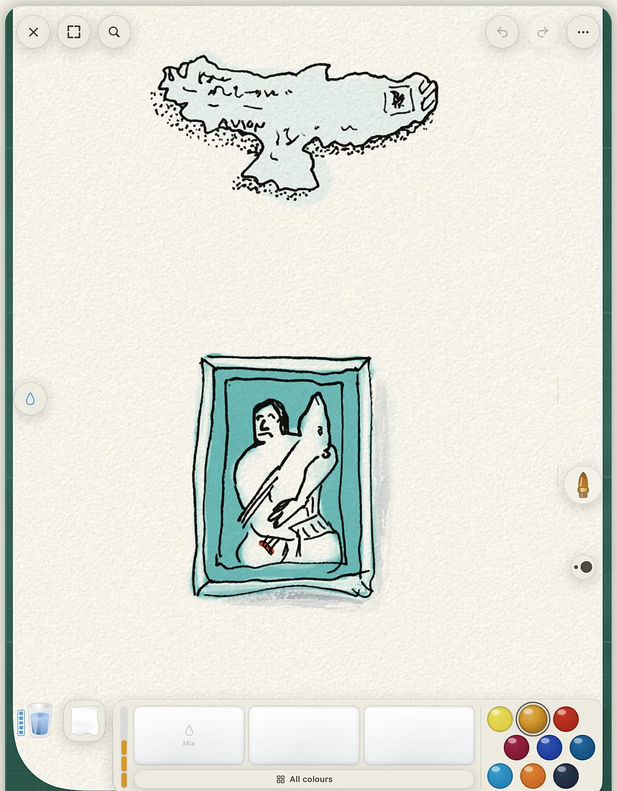

Line Lift
Real watercolor.
On your phone.
Not a filter, not a brush texture. A simulation of pigment and water: washes stay wet, colors bleed into each other, blooms spread while you watch, and a dry brush catches on the tooth of the paper.
Free. No account. iPhone and iPad.
Every serious art app assumes a tablet and a stylus.
Line Lift is built for fingers. For the sofa, the café, the commute.
The supplies are the interface.
Really wet
Wet the sheet.
Soak the whole page and paint into the standing water. Color creeps and feathers the way it does on cotton paper.
Really wet
Drop in a second color.
Into a wash that is still wet. The bloom spreads on its own, and a backrun forms where the water pulls back.
Really wet
Let it dry. Glaze over it.
Layers stack the way real washes do. Then a dry brush skips across the tooth of the paper.
The studio
No menus pretending to be art supplies.
A water bowl, a towel, a mixing tray and a row of pans. Dip, rinse, dab, mix. The brushes are the ones a watercolor painter reaches for, not a library of presets.
Broad washes
A hake for the sky. A sponge for the clouds.
The broad hake lays a wash in one pass. The sponge lifts texture back out, or dabs it in.
Masking
Tape it off. Peel it back.
Washi tape masks an edge. A craft knife cuts a shape. Paint over both, then peel back to clean paper.
Ink
A fineliner, and a pen that runs dry.
The reservoir pen is a dip pen with a real, finite ink load. Paint with sound on: every stroke is synthesized in real time, the wet drag of a loaded brush, the dry whisper of a thirsty one.
36 pigments, named after the real ones
Pigments, not swatches.
Every color is a pigment with its own behavior. French Ultramarine and Burnt Sienna granulate and settle into the paper. Phthalo Blue and Permanent Rose stain flat and even. All of them are free.




The six on a fresh install are the classic split primaries: a warm and a cool yellow, red and blue.

It can start on paper
Your ink, lifted off the page.
Draw with real ink on real paper. Point the camera at it, and Line Lift lifts the linework off the page so you can lay watercolor under your own drawing without losing it. The wobble stays. Nothing is retraced.
- Lift from the camera, a scanner, or an imported photo
- Keep a reference photo beside your work, or trace over it on the lightboard
- Or skip the paper and start on a blank sheet

Sketchbook
Every session saves a version.
Your work lives in notebooks you flip through. Each time you open a piece and paint, a new version is saved and the original is left alone. The earlier ones stay in the book.
- A time-lapse of every painting as it came together
- iCloud backup of your sketchbook, in your own iCloud
- Full export and undo
iPad and Apple Pencil
Room to spread out.
On iPad the desk gets wider. Apple Pencil pressure and rotation are supported, and never required. Everything works with a finger.

Who made it
One person. SwiftUI. AI in the loop.
Line Lift is designed and built by Fredrik Påhlman, a designer in Sweden, in SwiftUI, with AI tools in the loop at every stage: the watercolor engine, the studio, and this page.
- Price
- Free. Everything in this version.
- Account
- None. No ads either.
- Your artwork
- Stays on your device and in your own iCloud. It never passes through our servers.
- Analytics
- Anonymous, hosted in the EU. The details are in the privacy policy.
- Devices
- iPhone and iPad. Apple Pencil optional.
- Status
- Out now on the App Store. Free.
Line Lift
It's out.
Line Lift — Watercolor Studio is on the App Store now. Free, no account, and everything in this version is unlocked. If something breaks, or you just want to show me what you painted, the support page comes straight to me.
Download on the App StoreiPhone and iPad. Free. Questions?